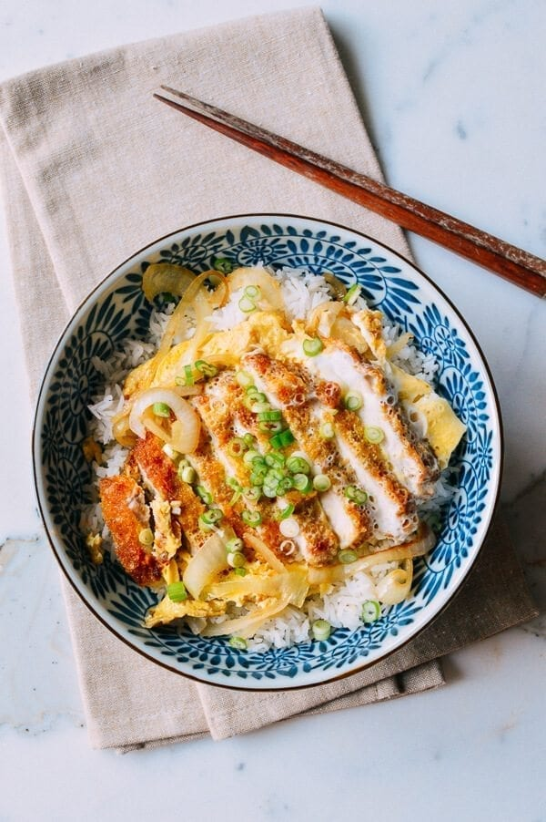

Katsudon

Ingredients
- 2 center-cut (boneless pork chops, pounded to a centimer thick).
- salt and pepper
- flour (for dusting).
- 1 egg
- 1 cup panko
- oil (for frying).
- 1/2 cup dashi stock or chicken stock
- 2 teaspoons sugar
- 1 tablespoon soy sauce
- 2 teaspoons Mirin
- 2 large eggs
- 1 meduim onion (thinly sliced).
- 2 servings steamed white rice
- 1 scallion (chopped).
Directions
- Season the pounded pork chops with salt and pepper and dust
and dust with a light, even coating of flour. In one shallow bowl,
beat the agg. Put the panko into another shallow bowl.
- Add thin, even layer of oil to a cast iron pan or skillet over
meduim heat. The oil is ready when you throw a panko breadcrumb
into the oil and it sizzles. Dip the pork into the egg to coat.
Transfer the pork to the panko and press it evenly into the meat
to get a good coating.
- Carefully lay the pork chops in the hot oil and cook for 5-6
minutes on one side, until golden brown. Flip and cook the other
side for another 5-6 minutes. Drain on a plate lined with a paper towel.
- While the pork is resting, add the stock, sugar, soy sauce,
and Mirin to a small bowl. In another bowl, lightly beat two eggs.
Add a tablespoon of oil to a pan over meduim heat, and agg the sliced
onion. fry the onions until they're translucent and slightly
carmelized
- Pour the stock mixture over the onions. Slice your tonkatsu
into pieces and place on top of the onions. Drizzle the
egg over everything. Cook over meduim low heat until the
egg is just set. Serve over bowls of steamed rice, and garnish
with scallions.
Check out the original recipe.
Contact Me
Email Me (Bridger!)